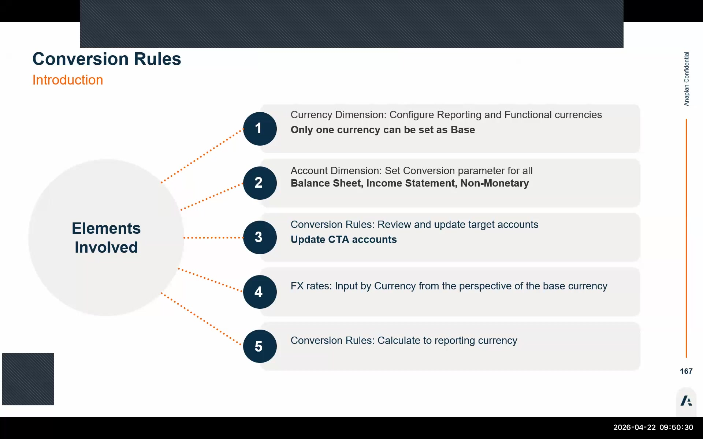
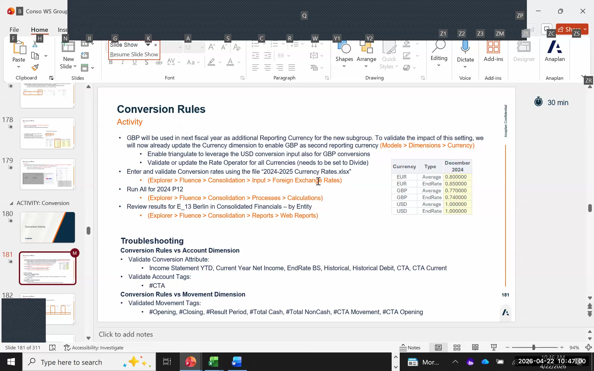
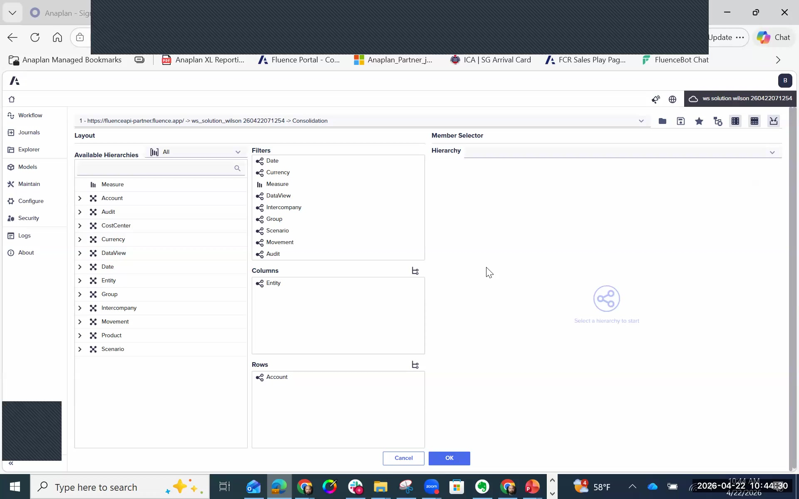

Currency Conversion
Triangulation, conversion parameters, FX rate entry, and troubleshooting
Triangulation: The Core Architecture
FCR uses a triangulation model for all currency translation. Every conversion in the system routes through a single base currency — you never convert directly from one foreign currency to another. This ensures mathematical consistency across any currency combination in your consolidation.
🏦 Base Currency Rules
- Exactly one base currency per tenant (typically USD)
- Base currency rate is always 1 — never enters the rate table
- Set
base_currency = trueon this dimension member - All other currencies are measured against the base
🔄 How Triangulation Works
- EUR → USD is direct (EUR is local, USD is base)
- GBP → EUR goes: GBP → USD → EUR
- Every path routes through the base currency
- No direct cross-rates needed — the base handles all conversions
Currency Dimension Settings
The currency dimension has several critical attributes that control how each currency member participates in conversion. Get these right before entering any rates.
| Attribute | Setting | Purpose |
|---|---|---|
base_currency |
true on base only (e.g., USD) | Marks the single base; rate = 1, always |
reporting |
true on currencies you want to report in | Makes the currency available in consolidated reports |
triangulate |
true on non-base reporting currencies | Enables the triangulation path through the base |
rate_operator |
Divide (divisory) or Multiply | How the rate is applied; same result, inverse format |
The #all_currency rollup member and no_currency member must never have rate operator attributes assigned. These are system members used for rollups and unassigned data — adding rate operators here will cause incorrect conversion behavior across the entire model.
Divisory vs. Multiplicative Rates
FCR supports two rate entry conventions. The math produces identical results — the choice is purely customer preference or historical convention.
÷ Divisory Rate (Divide)
- Enter the rate as: 1 / exchange rate
- EUR to USD at 1.10: enter 0.9091 (1/1.10)
- GBP to USD at 1.25: enter 0.80 (1/1.25)
- Common in European implementations
× Multiplicative Rate (Multiply)
- Enter the rate as the direct exchange rate
- EUR to USD at 1.10: enter 1.10
- GBP to USD at 1.25: enter 1.25
- More intuitive for most finance teams
P_conversion — Per-Account Conversion Rule
The P_conversion attribute in the Account dimension is the most important setting in the entire currency module. It controls which conversion rule applies to each account. Assign it carefully — missing accounts will load data but silently fail to convert.
| Conversion Type | Applied To | Rate Used | Notes |
|---|---|---|---|
| End Rate | Balance sheet accounts (assets, liabilities) | Closing rate at period end | References #closing tag on FX rate accounts |
| Average Rate | P&L accounts (revenue, expenses) | Period average rate | References #average tag on FX rate accounts |
| Historical | Equity accounts | Rate at date of original transaction | Requires a populated historical rate table |
| Current Year Net Income | Net income account | Special treatment — derived from P&L conversion | One specific account only; do not apply to multiple |
| CTA | Cumulative Translation Adjustment account | N/A — this is a target account | Do NOT assign P_conversion — CTA is calculated, not sourced |
| NGI (Net Group Income) | Net Group Income account | N/A — this is a target account | Do NOT assign P_conversion — NGI is calculated, not sourced |
| No Conversion | Cash flow accounts | None — amounts stay in local currency | Cash flow is calculated separately; no direct conversion needed |

Conversion Rule Structure
FCR ships with out-of-the-box conversion rules for each conversion type. In most implementations you do not need to create new rules — your primary task is assigning the correct P_conversion attribute to accounts.
Source → Target Data View Flow
Each conversion rule defines:
- Source Data View: The Value data view (local currency amounts loaded from source GL)
- Target Data View: The Conversion data view (translated amounts in reporting currency)
- Rate Type Reference: Rules reference the
#closingor#averagetag on FX rate accounts to pull the appropriate rate - Active Flag: Must be
truefor the rule to execute during Run All
If you add a new movement member to the chart of accounts, check whether it is included in total_cash_variation or total_non_cash_variation. If not, the conversion rule source may need to be manually updated to include it.
CTA Calculation Methods
The Cumulative Translation Adjustment account absorbs the exchange difference that arises when assets/liabilities are translated at closing rate but equity accounts use historical rates. FCR offers two methods:
📊 Current Method
- CTA is calculated and posted directly in the balance sheet
- CTA appears as a standalone equity line item
- Most common approach for IFRS-compliant reporting
- Standard out-of-the-box FCR configuration
📈 Integrated Method
- CTA flows through the income statement
- Included within current earnings in the balance sheet
- Used when translation differences are treated as income/expense
- Less common; requires specific rule configuration
Entering FX Rates — Foreign Exchange Global Rates
Rate entry has moved to a web form in this version of FCR. No more Excel-based rate files for the main rate table.
Navigate to the Rate Form
Go to Maintain → Foreign Exchange Global Rates. This is the new web form for the current release — previously this was done via an Excel import file.
USD Base Rate (Always 1)
The base currency (USD) must have a rate of 1 entered for both End Rate and Average Rate fields. This should already be set; verify before entering other rates.
Enter Period Rates for Reporting Currencies
For each reporting currency and each open period, enter the End Rate (closing rate) and Average Rate. Use the reference file 2024-2025 conversionrates.xls provided in the exercise folder as your rate source.
Decimal Separator — Watch the Format
The web form uses a period (.) as the decimal separator. If you are copying from Excel, Excel may use a comma (,) depending on regional settings. Entering 0,8091 instead of 0.8091 will result in a wrong rate with no error message.
Divisory Rate Example
For GBP at a rate of 1.25 USD/GBP (divisory/divide setting): enter 0.80 (= 1 ÷ 1.25). For EUR at 1.10 USD/EUR: enter 0.9091. The system divides the local currency amount by this rate to produce the USD equivalent.


Currency Conversion Troubleshooting Checklist
If conversion results look wrong — zero values, unchanged local amounts, or a balance sheet that doesn't balance — work through this checklist in order before escalating.
-
Do I have currency translation rates entered for the period?
Go to Maintain → Foreign Exchange Global Rates. Verify rates exist for the period you ran. Missing rates = no conversion. -
Is the reporting currency set correctly?
Check the currency dimension:reporting = trueandtriangulate = truemust be set on each non-base reporting currency. Ifreportingis false, results won't appear in consolidated reports. -
Did I assign the correct P_conversion property to all accounts?
Open the Account dimension and inspect theP_conversioncolumn. Every account that should convert needs a value. Accounts with a missingP_conversionwill load data but not convert — no error is shown. -
Are the conversion rules active?
Go to Maintain → Conversion Rules. Check that theActiveflag is set totrueon all relevant rules. Inactive rules are silently skipped. -
Did I add a new movement member?
If you added a movement dimension member after initial configuration, check whether it is included in the conversion rule's source definition (e.g., withintotal_cash_variationortotal_non_cash_variation). New movement members may need to be explicitly included. -
Is the conversion type Historical?
Historical conversion requires a separate historical rate table to be populated with rates at the date of original transactions. If this table is empty, Historical accounts will show zero or incorrect values. -
Are year-to-date opening balances zero on a brand-new tenant?
On a fresh tenant or the first period ever loaded, opening YTD balances are zero. This is expected — not a conversion error. Load your first period's trial balance and run again.
After running conversion, open the Consolidated Financials by Entity report and filter to a single entity (e.g., E13 Berlin). Drag the Currency dimension to columns. You should see EUR values, USD values, and GBP values side-by-side. For Berlin, expected cash account values are approximately EUR ~190 and USD ~224. If any column shows zero, use the checklist above starting from item 1.